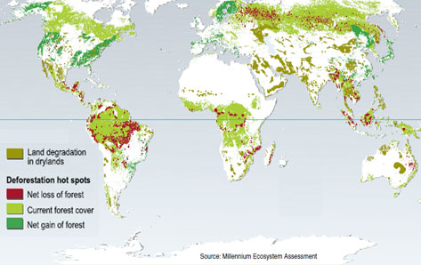
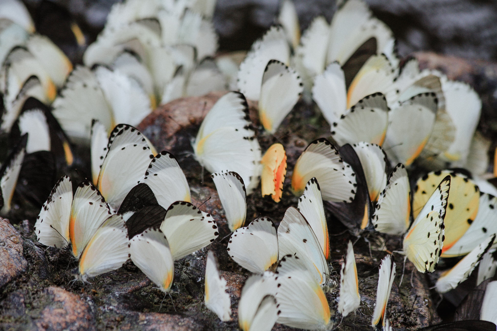

The term was created by a combination of biological and diversity. It simply means a variety of life and environment on every level of its organisation. We can divide biodiversity into three levels: variation at the genetic, species, and ecosystem. Terrestrial diversity is usually greater in the equatorial zone. In aquatic ecosystems are many species of plats and animals. But we can lose it due to global warming and deforestation. Almost half of the Earth’s tropical forest cover has been destroyed in the last 40 years and at current rates of deforestation, estimates predict 55% of the Amazon Rainforest could be severely damaged or gone by the year 2030. The picture below refers to deforestation between 1980–2000. The current rate of global diversity loss is estimated to be 100 to 1000 times higher than the naturally occurring and expected to still grow in the upcoming years.
A genetic diversity, underpins species diversity. It is the total number of genetic characteristics in the genetic makeup of a species. Genes accumulate changes over time and those that are best adapted to the environment survive and give rise to more offspring. Eventually, these genetic changes may give rise to new species. So thanks to genetic diversity we have so many different species living on Earth.
Let's have a look at the picture below.
These butterflies are so different but they still belong to the same species. This is exactly what species diversity is. We can also see species diversity by comparing for example potatoes.
| Species diversity shown on potatoes | |||||
|---|---|---|---|---|---|
| Type | Size | Skin color | Shape | Pulp | Color of flowers |
| Bellarosa | vey big | red | round - oval | yellow | red - purple |
| Annabelle | small | yellow | oblong | yellow | white |
| Lord | big | yellow | round - oval | light yellow | white |
| Aruba | medium - sized | yellow | oval | cream | white |
| Fresco | large | yellow | round-oval | light yellow | white |
The definition of ecosystem diversity refers to the number of ecosystems found and ecological interactions among organisms in a certain area. Ecosystems are all of the animals, plants, bacteria, and fungi as well as the physical components of the area. An ecosystem can be as large as an entire forest or as small as a clump of moss that provides a habitat for plants, microscopic invertebrates, and bacteria.
Biodiversity is important to humans for a number of reasons. It represents a significant resource of chemical and biological products including food, fibers, and medicine. It produces in clean air, clean water, and fertile soils. Ecologically, biodiversity contributes to ecosystem stability, which allows ecosystems to effectively withstand environmental perturbations.